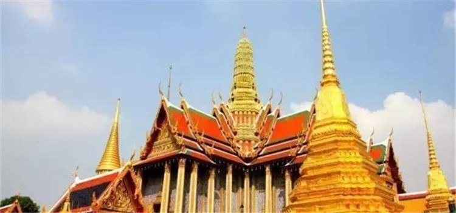

经典两日游
D1：大皇宫>卧佛寺>黎明寺
D2：曼谷文化艺术中心>四面佛>暹罗海底世界
#大皇宫#
大皇宫位于首都曼谷市中心，位于昭被耶河与湄南河交汇之畔，紧偎湄南河，由一组布局错落的建筑群组成，是暹逻式风格，汇集了泰国绘画、雕刻和装饰艺术的精华。

图：大皇宫
宫廷建筑以白色为主，四周筑有白色宫墙。宫墙高约5米，总长1900米，主要建筑物有阿玛林宫、节基宫、律实宫和玉佛寺等。此外，由拉玛八世兴建的宝隆皮曼宫，是招待外国元首的宾馆。
地址：Thanon Na Phra Lan, Phra Borom Maha Ratchawang, Phra Nakhon, Bangkok
#卧佛寺#
位于大皇宫隔壁的卧佛寺又称菩提寺，卧佛寺是全曼谷最古老的庙，也是全泰国最大的庙宇
地址：2 Sanamchai Road, Phra Nakhon, Bangkok
#黎明寺#
黎明寺（wat arun）又称为破晓寺或郑王庙，大概是因为本寺与郑王关系密切的原故。黎明寺的故事得从大城时代开始讲起，正确的建寺年代已不得而知。
郑王驱逐缅军后，带领部队顺水而下，军船经过寺前时，正好是黎明时分，郑王便令船停于寺前，上岸礼拜，后来郑王登上王位后，就下令重修佛寺，并根据当年情况将寺名改为黎明寺。预备在湄南河南岸建造王宫，将黎明寺做为王室家庙，西元1778年还移请玉佛到黎明寺供奉。
地址：34 Arun Amarin Road, Bangkokyai District, Bangkok
#曼谷文化艺术中心#
游客非常非常少，7-9层为临时展览区域，经常有不同主题的特别展览，建议提前查询官网了解相关资讯。还有一些艺术家会直接坐在店外演示、交流，里面也有很多特色店铺和咖啡店，适合文艺青年们来消遣放松。
地址：939 Rama 1 Road, Wangmai, Pathumwan, Bangkok
#四面佛#
在泰国被称之为有求必应佛，是曼谷著名的观光名胜，是泰国香火最旺的佛像之一。
地址：Thanon Ratchadamri, Lumphini, Pathum Wan, Bangkok
#暹罗海底世界#
坐落于曼谷暹罗典范购物中心的地下一层和二层，于2005年开馆，占地面积10000平方米，相当于两个足球场那么大，容水量超过4百万升，相当于3个奥运会游泳池，为东南亚最大的水族馆，集娱乐和教育为一体，通过一系列的项目让游客了解水栖动物的生活环境。
地址：Siam Paragon B1-2, 991 Rama 1 Road, Bangkok
经典三日游
D1：大皇宫>玉佛寺>卧佛寺
D2：丹嫩沙多水上集市>美功铁道市场>考山路
D3：唐人街>金佛寺>Asiatique 码头夜市
#大皇宫#
大皇宫位于首都曼谷市中心，位于昭被耶河与湄南河交汇之畔，紧偎湄南河，由一组布局错落的建筑群组成，是暹逻式风格，汇集了泰国绘画、雕刻和装饰艺术的精华。宫廷建筑以白色为主，四周筑有白色宫墙。宫墙高约5米，总长1900米，主要建筑物有阿玛林宫、节基宫、律实宫和玉佛寺等。此外，由拉玛八世兴建的宝隆皮曼宫，是招待外国元首的宾馆。
地址：Thanon Na Phra Lan, Phra Borom Maha Ratchawang, Phra Nakhon, Bangkok
#玉佛寺#
玉佛寺是泰国佛教最神圣的地方，是查库里王朝的守护寺和护国寺，建于1784年的玉佛寺是泰国大王宫的一部分，面积约占大王宫的1/4。玉佛寺是泰国王族供奉玉佛像和举行宗教仪式的场所，因寺内供奉着玉佛而得名。寺内有玉佛殿、先王殿、佛骨殿、藏经阁、钟楼和金塔。玉佛寺的门票与大皇宫的门票通用。
地址：hanon Na Phra Lan, Phra Borom Maha Ratchawang, Phra Nakhon, Bangkok
#卧佛寺#
位于大皇宫隔壁的卧佛寺又称菩提寺，卧佛寺是全曼谷最古老的庙，也是全泰国最大的庙宇
地址：2 Sanamchai Road, Phra Nakhon, Bangkok
#丹嫩沙多水上集市#
因007电影而出名的丹嫩沙多水上集市一直是游客的必到之地。狭窄的河道中挤满了卖货的小船，交错往来中戴着草帽的女商贩们大声吆喝叫卖，形成了一道独特的风景线。
集市一般从清晨一直持续到下午2点左右，早上7点到8点这一段时间是高峰期。如果想避开热闹的游客团队，建议提前一天住在附近，然后起个大早去赶早市。
地址: Damnoen Saduak District, Ratchaburi, Bangkok

图：丹嫩沙多水上集市
#美功铁道市场#
这个铁道市场的摊位都是沿着铁道摆放，有许多便宜的水果和新鲜蔬菜，每当有火车过来，火车站就会发出鸣笛警告，摊主们就会收起摊位，等火车通过，这样的市场景观全世界也只有在这能看到。
地址：Muang Samut Songkram, Samut Songkhram, Bangkok
#考山路#
考山路是曼谷背包客云集的地方，巷子里有许多个性的小店，各店的招牌非常醒目，到了夜里这里摆卖各种廉价T-shrit、纪念品等，酒吧、街边小吃也比比皆是。夜幕降临，这里反而越发地热闹起来，小小一条街，却陷入了漫长的狂欢。
地址：Khao San Rd., Bangkok
图：考山路夜市
#唐人街#
曼谷唐人街（China Town），在泰国首都曼谷市区西部，是城区最繁华的商业区之一，其规模及繁华程度，在东南亚各地的唐人街中，堪称魁首。这座富有华夏风采的名副其实的”中国城”，长约2公里，矗立在泰京城西，由三聘街、耀华力路、石龙军路三条大街以及许多街巷连接而成。
地址：Yaowarat, Bangkok
#金佛寺#
为泰国著名寺庙，泰国三大国宝之一。据说这座寺院由三位华人集资建成，故又称三华寺或三友寺。
地址：Thanon Mittaphap Thai-China Talat Noi, Samphanthawong, Bangkok
#Asiatique 码头夜市#
全亚洲最大夜市，由旧码头仓库改建而成，与传统夜市相比，环境整洁、小资情调更浓。
地址：2194 Charoen Krung Rd, Khwaeng Wat Phraya Krai, Khet Bang Kho Laem, Bangkok
深度三日游
D1：湄南河>曼谷艺术文化中心>四面佛
D2：暹罗海底世界>唐人街>胜利纪念碑
D3：王权曼谷市区免税购物中心>Terminal 21 Shopping Mall>Asiatique 码头夜市
#湄南河#
湄南河在泰国又叫昭拍耶河，是泰国最主要的河流，也是泰国的母亲河。
地址：Khwaeng Bang Rak,Khet Bang Rak, Krungthep Mahanakorn, Bangkok
#曼谷文化艺术中心#
游客非常非常少，7-9层为临时展览区域，经常有不同主题的特别展览，建议提前查询官网了解相关资讯。还有一些艺术家会直接坐在店外演示、交流，里面也有很多特色店铺和咖啡店，适合文艺青年们来消遣放松。
地址：939 Rama 1 Road, Wangmai, Pathumwan, Bangkok
图：曼谷文化艺术中心
#四面佛#
在泰国被称之为有求必应佛，是曼谷著名的观光名胜，是泰国香火最旺的佛像之一。
地址：Thanon Ratchadamri, Lumphini, Pathum Wan, Bangkok
#暹罗海底世界#
坐落于曼谷暹罗典范购物中心的地下一层和二层，于2005年开馆，占地面积10000平方米，相当于两个足球场那么大，容水量超过4百万升，相当于3个奥运会游泳池，为东南亚最大的水族馆，集娱乐和教育为一体，通过一系列的项目让游客了解水栖动物的生活环境。
地址：Siam Paragon B1-2, 991 Rama 1 Road, Bangkok
#唐人街#
曼谷唐人街（China Town），在泰国首都曼谷市区西部，是城区最繁华的商业区之一，其规模及繁华程度，在东南亚各地的唐人街中，堪称魁首。这座富有华夏风采的名副其实的”中国城”，长约2公里，矗立在泰京城西，由三聘街、耀华力路、石龙军路三条大街以及许多街巷连接而成。
地址：Yaowarat, Bangkok
#胜利纪念碑#
胜利纪念碑是于1941年6月建造的一个象征军国主义的遗物，主要是纪念暹罗在入侵印度支那的战争里击败法国，进而吞并高棉西北部及老挝南部领土的事件。胜利纪念碑中央的方尖碑是一把军剑，象征着阳刚；周边围绕的5个铜雕像则代表陆军、海军、空军、警察及文职人员。
地址：Victory Monument, Thanon Phaya Thai, Ratchathewi, Bangkok
#王权曼谷市区免税购物中心#
泰国王权免税店隶属于泰国王权国际集团旗下，汇聚众多世界时尚热销品牌，购物空间优雅舒适，拥有王权曼谷市中心店、王权曼谷素万那普国际机场店、王权曼谷史万利店、王权曼谷廊曼机场店、芭提雅市区店、普吉国际机场店，合艾机场店，清迈国际机场店等八大分店。泰国King Power 免税店泰国最大的免税零售商。
地址：8 King Power Complex, Rangnam Road, Phayathai, Ratchathewi, Bangkok
#Terminal 21 Shopping Mall#
非常富有创意的一个商场，布局以航站楼为主题，一共九层，每一层配以不同国家城市的著名街道、标志性建筑物等，每层的厕所风格也不一样，可谓别具特色。除了在这里买买买，你还可以拍拍拍。
地址：288 Sukhumvit Soi 19 (Wattana) Sukhumvit Rd, Bangkok
图：Terminal 21 Shopping Mall
#Asiatique码头夜市#
全亚洲最大夜市，由旧码头仓库改建而成，与传统夜市相比，环境整洁、小资情调更浓。
地址：2194 Charoen Krung Rd, Khwaeng Wat Phraya Krai, Khet Bang Kho Laem, Bangkok
深度两日游
D1：蓝毗尼公园>金山寺>安帕瓦水上市场
D2：暹罗广场>曼谷文化艺术中心
#蓝毗尼公园#
曼谷市区最大的公园，不过比想象中小，有很多来这里慢跑、骑自行车健身的人，没看见什么游客，倒是看见了非常原生态的大蜥蜴。。。是个休闲散心的好去处，而且绿化比较好，树荫下面也不会觉得太热。
地址：139/4 Witthayu Rd, Lumphini, Pathum Wan, Bangkok
图：蓝毗尼公园
#金山寺#
跟曼谷其他名声赫赫的寺庙比起来，这里算寺庙比较小，在山顶，山不高，爬个十来分钟就能登顶了，在山顶可以俯瞰曼谷市景，视野很好，如果当天曾经下雨，的话，山上空气会非常清新。登山过程中还会路过一个小的咖啡店，可以在里面休息。
地址：344/4 Wat Saket Chakkapatdiphong Rd., Banbat Pomprapsattruphai, Samphanthawong, Bangkok
#安帕瓦水上市场#
安帕瓦水上市场坐落于夜功府的小镇安帕瓦，距离泰国首都曼谷约一百公里，是泰国比较有名的水上市场之一，非商业化，主要还是泰国本土人去得多，也有很多外国游客，在这里可以体会到浓浓的泰国集市文化。市场属于晚上集市，每当夜幕降临的时候会有许多萤火虫出来作伴。
地址：Prachaset rd., Amphawa, Samut Songkhram, Bangkok
#暹罗广场#
暹罗广场始建于1965年，地皮由朱拉隆功大学所有。初时，
暹罗广场只有平常的租户，后来吸引到品牌商户，令至暹罗广场向周边扩张。2007年上映的泰国电影《暹罗之恋》有多个镜头也是在此拍摄。
地址：Siam Square 1, Pathum Wan, Bangkok
图：暹罗广场
#曼谷文化艺术中心#
游客非常非常少，7-9层为临时展览区域，经常有不同主题的特别展览，建议提前查询官网了解相关资讯。还有一些艺术家会直接坐在店外演示、交流，里面也有很多特色店铺和咖啡店，适合文艺青年们来消遣放松。
地址：939 Rama 1 Road, Wangmai, Pathumwan, Bangkok